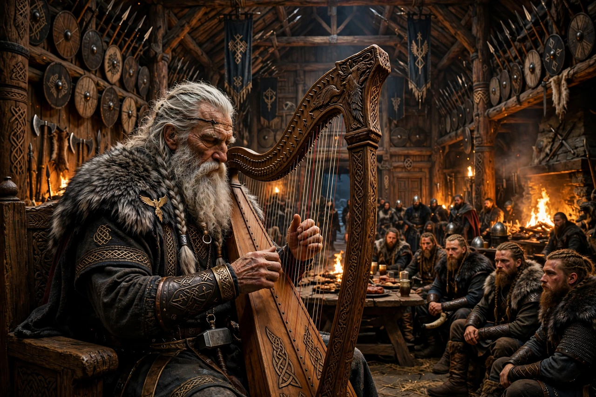

From Wikipedia, the free encyclopedia
| Bragi | |
|---|---|
| Affiliation | Æsir; god of poetry and eloquence |
| Spouse | Idunn, keeper of the apples of youth |
| Depicted as | An aged, long-bearded skald with a harp |
| Source figure | Possibly the deified 9th-century skald Bragi Boddason |

Bragi is the god of poetry and eloquence among the Æsir of Norse mythology, husband of Idunn, whose apples keep the gods young. Depicted as an old, long-bearded man with a harp — the only Norse god who looks his art's antiquity — he is the welcomer of dead kings and heroes to Valhalla, where his own eloquence greets them, and the narrator of long stretches of Snorri's Skáldskaparmál, in which the sea-giant Ægir questions him on the origins of poetry and the kennings of the skalds. His name is bound up with bragr, "poetry" (and "foremost"), and runes are said to be carved on his tongue.
Uniquely among the Æsir, Bragi may have begun as a man: Bragi Boddason, the earliest skald whose verses survive (9th century), was remembered as the fountainhead of Norse poetry, and many scholars hold that the god is the deified poet, absorbed into Asgard as the craft's patron — though others argue the god is old and the poet named for him. In Lokasenna Loki mocks his courage (the seated god boasts, says Loki, but would not fight), and Idunn must calm her husband's anger — a domestic scene that humanises both. His welcome of the slain in Eiríksmál and Hákonarmál, where he and Odin debate which king approaches, shows his office at work.
Norse mythology · Odin · Loki · Poetic Edda